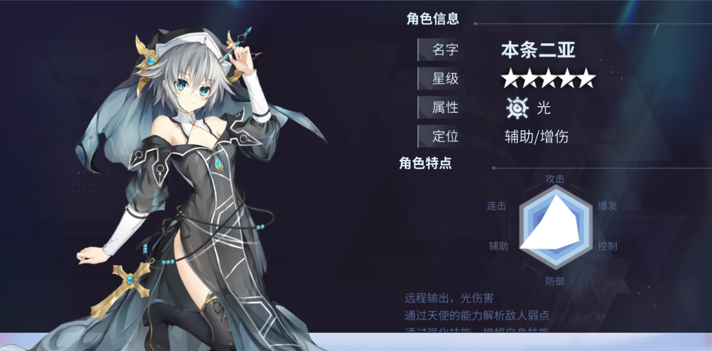
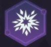
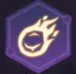
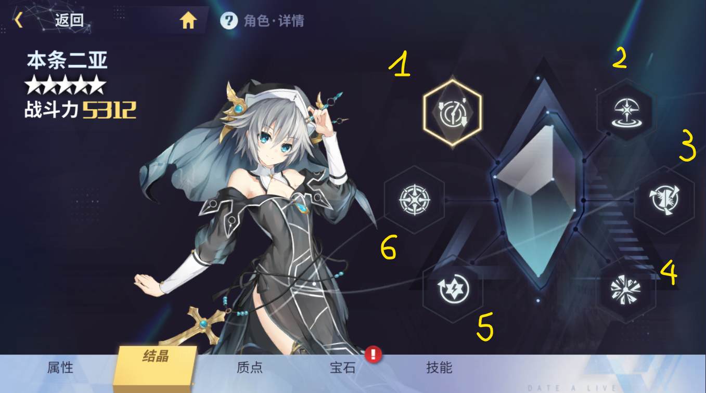
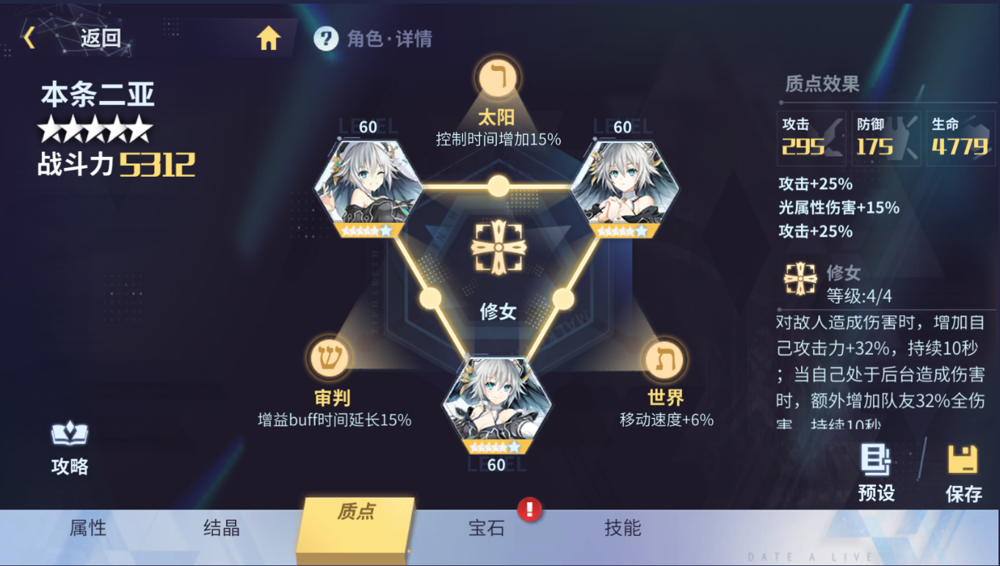
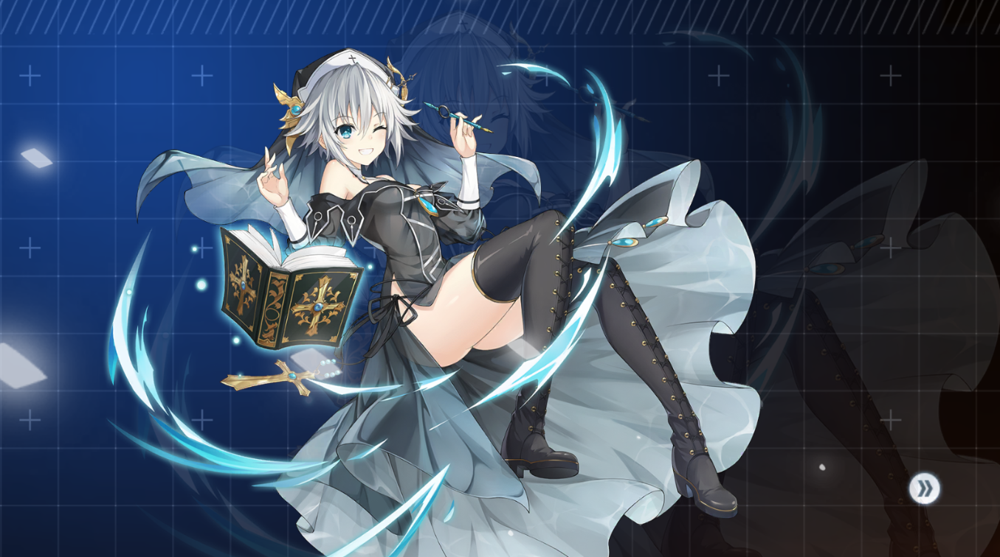
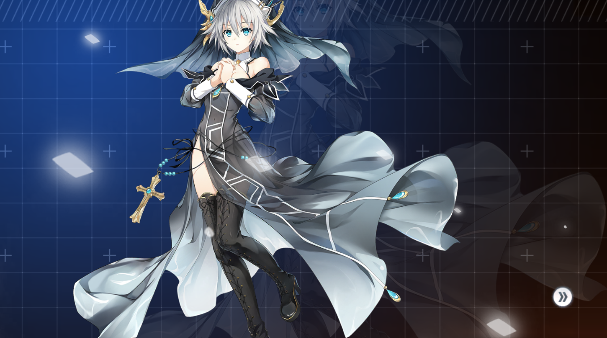
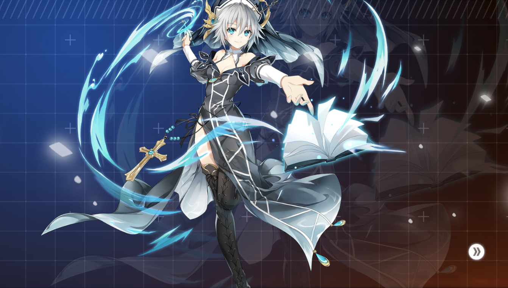
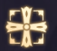
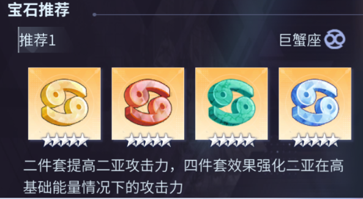

Nia
Contributor: Nguyễn Thái Sơn

Tổng quan
Tên: Honjou Nia - SisterHệ nguyên tố: Light - Ánh sáng
Vai trò: Hỗ trợ / Phụ sát thương
Tinh linh tầm xa, có thể phân tích điểm yếu của mục tiêu, qua đó khuếch đại sát thương.
Cơ chế năng lượng: Khởi đầu: 0 Max: 100
Hồi phục 3 năng lượng mỗi giây
Khi Nia xuất hiện trên sân, hồi 5% máu tối đa của bản thân cho tất cả đồng minh sau mỗi 5s. Khi ra khỏi sân hiệu ứng sẽ mất. Lượng hồi phục mỗi lần không vượt quá 10% máu tối đa của mục tiêu.
Thông tin kĩ năng
Đánh thường: Sanctions of the Light - Ánh sáng trừng phạtNia sử dụng linh lực để tấn công kẻ địch gần nhất phía trước, đòn tấn công sẽ nổ trong 1 phạm vi nhỏ quanh mục tiêu, gây 165% atk light dmg
Nâng cấp 1: mở khóa đòn đánh thứ 4, gây 245% atk light dmg
Nâng cấp 2: mở khóa đòn thứ 5, gây 345% atk light dmg
Nâng cấp cuối: mỗi khi tấn công có 10% giải phóng thêm đòn đánh thứ 5
Các điểm phụ, chỉ áp dụng cho skill này (chỉ số max):
* Hit rate +8%
* Mỗi khi tấn công tăng 2% tốc đánh trong 8s, max 5 lớp
* Mỗi khi tấn công tăng 3% sát thương trong 8s, max 5 lớp
* Tăng 10% dmg
Skill 1: Attribute analysis - Phân tích thuộc tính
Nia sử dụng Rasiel để phân tích toàn bộ điểm yếu của kẻ địch, gây 250% light dmg, đồng thời áp dụng debuff [Phân tích] lên mục tiêu trúng phải, khiến chúng nhận thêm 10% dmg mỗi lần nhận sát thương trong 5s
Nâng cấp 1:cường hóa sát thương lên 400% light dmg, đồng thời hiệu ứng [Phân tích] sẽ gây thêm ngẫu nhiên 1 trong các hiệu ứng: giảm 15% tốc chạy, giảm 15% def, giảm 15% kháng light trong 5s
Nâng cấp 2: mở khóa đòn tấn công thứ 2, trong vòng 7s có thể tái kích hoạt kĩ năng để tấn công toàn bộ mục tiêu phía trước bằng thông tin thu được, gây 600% light dmg
Nâng cấp cuối: Kĩ năng gây tổng cộng 800% light dmg. Đòn tấn công thứ 2 có thể tác động lên đồng minh(không gây sát thương), giảm dmg MIT của đồng minh đi 10%, nhưng bù lại tăng 15% sát thương toàn phần.
Các điểm phụ, chỉ áp dụng cho skill này (chỉ số max):
* Giảm 2s hồi chiêu
* Hit rate +8%
* Khi tấn công kẻ địch có HP hiện tại trên 70%, sát thương gây ra tăng 15%
* Tăng 3s hiệu ứng [Phân tích] (Không tăng hiệu ứng ngẫu nhiên đi kèm)
Skill 2: Holy Imprisonment - Ngục tù thánh thần
Nia vẽ vào Rasiel, gây 270% light dmg vào một khu vực lớn phía trước, đồng thời mỗi đòn tấn công sẽ có hiệu ứng [Giam cầm] 0.5s. [Giam cầm]: hiệu ứng trói
Nâng cấp 1: Có thể nhấn giữ để kéo dài kĩ năng thêm 1s, và tạo ra một chấn động lớn khi kết thúc, gây 380% light dmg
Nâng cấp 2: Kéo dài kĩ năng thành 2s, gây 680% light dmg
Nâng cấp cuối: Phạm vi kĩ năng tăng 10%
Các điểm phụ, chỉ áp dụng cho skill này (chỉ số max):
* Giảm 2s hồi chiêu
* Hit rate +8%
* Mỗi khi gây sát thương, giảm 2% dmg MIT của địch 12s, xếp chồng 5 lớp
* Khi kĩ năng kết thúc, giảm 15% hit rate của mục tiêu trong 8s
Skill 3: Accumulated power - Năng lượng tích tụ 
Nia tiêu hao một lượng lớn (40) linh lực để tăng sức mạnh cho kĩ năng đánh thường tiếp theo trong vòng 5s, đòn đánh sẽ gây gây 460% light dmg. Hiệu ứng tăng cường sẽ hủy bỏ sau khi hoàn thành đầy đủ 1 lần kĩ năng đánh thường.
Nâng cấp 1: Giảm 2s CD của skill 1 và 3s CD của skill 2 khi thi triển kĩ năng này.
Nâng cấp 2: Cường hóa đòn đánh thường, gây 680% light dmg
Nâng cấp cuối: Có thể cường hóa skill 2 trong 5s. Khi niệm skill 2, sẽ có tối đa 4 cơ hội cường hóa, tỉ lệ xảy ra là 50%. Các sự kiện có thể xảy ra:
* Một xác chiến hạm rơi xuống, gây 100% light dmg, và làm choáng 1s mỗi lần gây sát thương
* Một cơn lốc xoáy quét qua toàn bộ kẻ địch, gây 150% light dmg, giảm 20% tốc độ di chuyển của kẻ địch 5s
* Các tia sét tấn công ngẫu nhiên, gây tổng cộng 150% light dmg, giảm 15% atk của kẻ địch trúng chiêu
Các điểm phụ, chỉ áp dụng cho skill này (chỉ số max):
* Giảm 2s hồi chiêu
* Tiêu hao linh lực -5
* Sau khi sử dụng skill này, Nia nhận buff giảm 30% sát thương gánh chịu trong 8s
* Nếu thi triển khi linh lực đạt 100%, Nia sẽ nhận buff tăng 20% sát thương toàn phần trong 8s
Ultimate: Future Sketch - Phác họa tương lai 
Nia vẽ vào Rasiel một thảm họa cấp độ thiên tai, gây 1850% light dmg cho toàn bộ kẻ thù
Kết tinh
Thiên sứ: Chiếp Cáo Thiên Trật «Rasiel» (囁告篇帙 - Cuốn Sách của Sự Tiết Lộ)

Vị trí 2: Edge OB: Khi Nia rời khỏi sàn đấu sẽ lập tức thi triển skill 1. Sau đó mỗi 6s sẽ tự tiêu hao 35 linh lực để sử dụng skill 1
Vị trí 3: Parting Gift: Khi Nia rời khỏi sàn đấu sẽ hồi [30% atk] máu cho toàn bộ đồng minh, lượng hồi phục không vượt quá 10% HP của đồng minh mỗi lần.
Vị trí 4: Clue collection: Mỗi khi skill 1 gây sát thương sẽ nhận 1 điểm [Thông tuệ], khi đạt 3 điểm [Thông tuệ] sẽ tiêu hao toàn bộ để tăng 20% dmg cho toàn bộ đồng minh trong 10s
Vị trí 5: Burst of inspiration: Đòn đánh thường được cường hóa sẽ gây thêm [35% max HP của Nia] sát thương chuẩn
Vị trí 6: Protagonist Aura - Hào quang nhân vật chính: Khi các nhân vật khác tấn công bằng thuộc tính ánh sáng, sức tấn công của Nia tăng thêm 15%
Bộ vết thánh - Sephira: Sister

* Hod - Revelation: +16% atk, 25% khi 6*

* Yesod - Whistle: +16% atk, 25% khi 6*

* Malkuth - Praise: +10% Light dmg, 15% khi 6*

Link Kabbalah:
The Last Judgement: +15% thời gian buff
The Sun: +15% thời gian khống chế
Zawarudo: +6% tốc độ di chuyển
Effect full set: 
Khi gây sát thương Nia sẽ tự tăng 17%/21%/26%/32% atk 10s. Khi đang không ở trên sân và gây sát thương, sẽ tăng 17%/21%/26%/32% sát thương toàn phần cho tất cả đồng minh.
Runestones

Hiệu ứng set 4: tăng 6% atk với mỗi 10 điểm linh lực hiện tại, tăng tối đa 60% atk
Nhà phát hành gợi ý sử dụng bộ Runestones Cancer cho Nia. Nia có rất nhiều các tính năng liên quan đến chỉ số ATK, dễ thấy nhất là khả năng hồi máu, và mức linh lực của Nia thường xuyên đạt tối đa. Vì vậy bản thân người viết đồng ý với cách lựa chọn gem stone này.